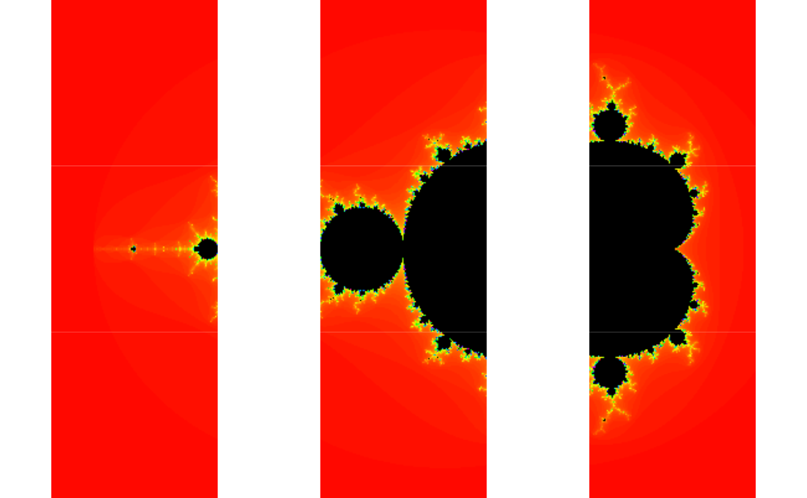

future.batchtools: A Future for batchtools
Source:R/future.batchtools-package.R
future.batchtools.RdThe future.batchtools package implements the Future API on top of batchtools such that futures can be resolved on for instance high-performance compute (HPC) clusters via job schedulers. The Future API is defined by the future package.
Details
To use batchtools futures, load future.batchtools, and
select the type of future you wish to use via
future::plan().
Author
Maintainer: Henrik Bengtsson henrikb@braju.com (ORCID) [copyright holder]
Examples
library(future.batchtools)
## Use local batchtools futures
plan(batchtools_local)
## A global variable
a <- 1
v %<-% {
b <- 3
c <- 2
a * b * c
}
print(v)
#> [1] 6
# \donttest{
plan(batchtools_local)
demo("mandelbrot", package = "future", ask = FALSE)
#>
#>
#> demo(mandelbrot)
#> ---- ~~~~~~~~~~
#>
#> > library(future)
#>
#> > library(graphics)
#>
#> > plot_what_is_done <- function(counts) {
#> + for (kk in seq_along(counts)) {
#> + f <- counts[[kk]]
#> +
#> + ## Already plotted?
#> + if (!inherits(f, "Future")) next
#> +
#> + ## Not resolved?
#> + if (!resolved(f)) next
#> +
#> + message(sprintf("Plotting tile #%d of %d ...", kk, n))
#> + counts[[kk]] <- value(f)
#> + screen(kk)
#> + plot(counts[[kk]])
#> + }
#> +
#> + counts
#> + }
#>
#> > ## Options
#> > region <- getOption("future.demo.mandelbrot.region", 1L)
#>
#> > if (!is.list(region)) {
#> + if (region == 1L) {
#> + region <- list(xmid = -0.75, ymid = 0.0, side = 3.0)
#> + } else if (region == 2L) {
#> + region <- list(xmid = 0.283, ymid = -0.0095, side = 0.00026)
#> + } else if (region == 3L) {
#> + region <- list(xmid = 0.282989, ymid = -0.01, side = 3e-8)
#> + }
#> + }
#>
#> > nrow <- getOption("future.demo.mandelbrot.nrow", 3L)
#>
#> > resolution <- getOption("future.demo.mandelbrot.resolution", 400L)
#>
#> > delay <- getOption("future.demo.mandelbrot.delay", interactive())
#>
#> > if (isTRUE(delay)) {
#> + delay <- function(counts) Sys.sleep(1.0)
#> + } else if (!is.function(delay)) {
#> + delay <- function(counts) {}
#> + }
#>
#> > ## Generate Mandelbrot tiles to be computed
#> > Cs <- mandelbrot_tiles(xmid = region$xmid, ymid = region$ymid,
#> + side = region$side, nrow = nrow,
#> + resolution = resolution)
#>
#> > if (interactive()) {
#> + dev.new()
#> + plot.new()
#> + split.screen(dim(Cs))
#> + for (ii in seq_along(Cs)) {
#> + screen(ii)
#> + par(mar = c(0, 0, 0, 0))
#> + text(x = 1 / 2, y = 1 / 2, sprintf("Future #%d\nunresolved", ii), cex = 2)
#> + }
#> + } else {
#> + split.screen(dim(Cs))
#> + }
#> [1] 1 2 3 4 5 6 7 8 9
#>
#> > ## Create all Mandelbrot tiles via lazy futures
#> > n <- length(Cs)
#>
#> > message(sprintf("Creating %d Mandelbrot tiles:", n), appendLF = FALSE)
#> Creating 9 Mandelbrot tiles:
#>
#> > counts <- lapply(seq_along(Cs), FUN=function(ii) {
#> + message(" ", ii, appendLF = FALSE)
#> + C <- Cs[[ii]]
#> + future({
#> + message(sprintf("Calculating tile #%d of %d ...", ii, n), appendLF = FALSE)
#> + fit <- mandelbrot(C)
#> +
#> + ## Emulate slowness
#> + delay(fit)
#> +
#> + message(" done")
#> + fit
#> + }, lazy = TRUE)
#> + })
#> 1
#> 2
#> 3
#> 4
#> 5
#> 6
#> 7
#> 8
#> 9
#>
#> > message(".")
#> .
#>
#> > ## Calculate and plot tiles
#> > repeat {
#> + counts <- plot_what_is_done(counts)
#> + if (!any(sapply(counts, FUN = inherits, "Future"))) break
#> + }
#> Plotting tile #1 of 9 ...
#> Calculating tile #1 of 9 ...
#> done
#> Plotting tile #2 of 9 ...
#> Calculating tile #2 of 9 ...
#> done
#> Plotting tile #3 of 9 ...
#> Calculating tile #3 of 9 ...
#> done
#> Plotting tile #4 of 9 ...
#> Calculating tile #4 of 9 ...
#> done
#> Plotting tile #5 of 9 ...
#> Calculating tile #5 of 9 ...
#> done
#> Plotting tile #6 of 9 ...
#> Calculating tile #6 of 9 ...
#> done
#> Plotting tile #7 of 9 ...
#> Calculating tile #7 of 9 ...
#> done
#> Plotting tile #8 of 9 ...
#> Calculating tile #8 of 9 ...
#> done
#> Plotting tile #9 of 9 ...
#> Calculating tile #9 of 9 ...
#> done

#>
#> > close.screen()
#> [1] 1 2 3 4 5 6 7 8 9
#>
#> > message("SUGGESTION: Try to rerun this demo after changing strategy for how futures are resolved, e.g. plan(multisession).\n")
#> SUGGESTION: Try to rerun this demo after changing strategy for how futures are resolved, e.g. plan(multisession).
# }